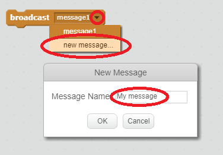
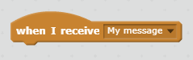
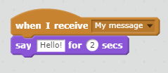

A broadcast is a way of sending a signal from a sprite which can be heard by all sprites. Think of it like an announcement made over a loudspeaker.
You can send a broadcast by creating a broadcast block and giving it a name.
Find the broadcast block in the Events tab.
Select new message in the drop-down menu, then type your message.

The message text can be anything you like, but it is useful to give the broadcast a sensible description. What happens when the message is received depends on the code you write.
A sprite can react to a broadcast by using this block:

You can add blocks below this block to tell the sprite what to do when it receives the broadcast signal.
